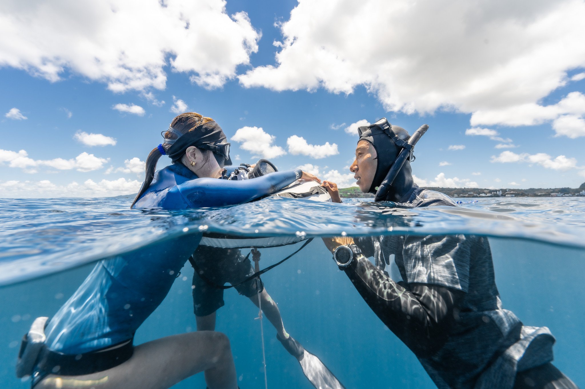

シュノーケリング体験
沖縄・青の洞窟
¥6,000〜 ・ ★4.9
スキンダイビング1日講習
伊豆・大瀬崎
¥12,000〜 ・ ★4.9
素潜り体験ツアー
鹿児島・錦江湾
¥8,000〜 ・ ★5.0
フリーダイビング体験コース
関東・プール
¥15,000〜 ・ ★4.8
スキンダイビング半日体験
和歌山・白浜
¥9,000〜 ・ ★4.9

AIDAインストラクター
東京・葉山
★5.0 ・ レビュー42件
スキンダイビング専門スクール
静岡・伊豆
★4.9 ・ レビュー31件
深度トレーニング対応スクール
神奈川・三浦
★4.8 ・ レビュー27件
シュノーケルツアー主催
沖縄・宮古島
★4.9 ・ レビュー58件
青の洞窟シュノーケル
沖縄・恩納村
ボートシュノーケリング
和歌山・串本
¥7,500〜 ・ ★4.8
親子シュノーケル体験
¥5,000〜 ・ ★5.0
ナイトシュノーケル
沖縄・石垣島
¥8,000〜 ・ ★4.9
初めてのシュノーケルで準備するもの
入門・体験
完全初心者向け
シュノーケルとスキンダイビングの違い
どちらが自分に合う？
日本のおすすめシュノーケルスポット
海・スポット
全国10選
スキンダイビング認定コース
¥28,000〜 ・ ★5.0
魚突き×スキンダイビング
高知・柏島
¥14,000〜 ・ ★4.8
スキンダイビングの安全とバディの基本
身体・科学
安全訴求
ひと息で潜る——ドルフィンキック入門
中級者向け
ウエイトと浮力の考え方
初中級者向け
AIDA2 認定コース
関東・プール＋海洋
¥45,000〜 ・ ★5.0
深度トレーニングキャンプ
エジプト・ダハブ
¥88,000〜 ・ ★4.9
STA・プール競技クラス
東京・室内プール
¥6,000〜 ・ ★4.8
CWT/CNF デプス講習
¥38,000〜 ・ ★5.0
Volcano Cup 2026
鹿児島・国際大会
エントリー受付中
国内ランキング
AIDA Japan 全国
種目別に見る
STA競技における「収縮管理」
競技・大会
競技者向け
「耳抜きができない」を解決する3つのアプローチ
読むと上達が早くなる
水深40メートルで、人は何を考えるのか
人物メディア
寺嶋拓哉
息を7分止めるとき、頭の中で何が起きているか
泳げなくてもフリーダイビングはできる？
Freediving Japan 編集部
日本のおすすめシュノーケルスポット全国10選
耳抜き入門・基礎完全講座
こうようさん・全8レッスン
¥5,000 ・ 準備中
息止め入門講座
寺嶋拓也・全6レッスン
息止め中級講座
寺嶋拓也・全8レッスン
¥8,000（仮） ・ 準備中
STA競技者向け講座
寺嶋拓也・全10レッスン
¥12,000 ・ 準備中